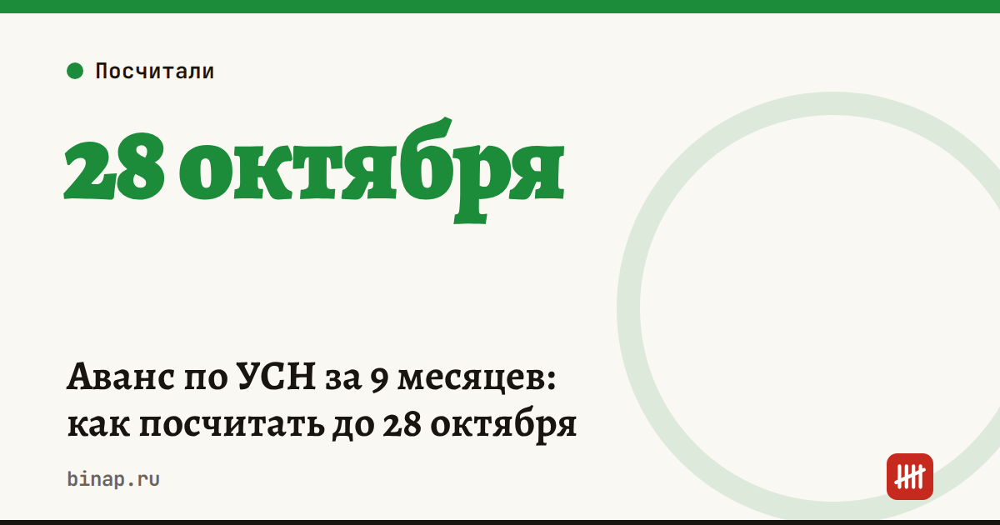

Аванс по УСН за 9 месяцев: как посчитать до 28 октября

Третий аванс по УСН — за январь–сентябрь — нужно заплатить до 28 октября 2026 года. Его считают нарастающим итогом с начала года и вычитают то, что уже заплатили за I квартал и полугодие.
Формула для «доходов» 6%:
Аванс = доход за 9 месяцев × 6% − взносы, уплаченные за 9 месяцев − авансы за I квартал и полугодие
- ИП без работников уменьшает налог на взносы за себя полностью.
- ИП и компании с работниками — не больше чем на 50% налога.
Пример. ИП без сотрудников, доход за 9 месяцев — 2 400 000 ₽.
| Шаг | Сумма |
|---|---|
| Налог 6% за 9 месяцев | 144 000 ₽ |
| Минус взносы за себя, уплаченные в январе–сентябре | 40 000 ₽ |
| Минус авансы за I квартал и полугодие | 60 000 ₽ |
| К уплате до 28 октября | 44 000 ₽ |
Суммы взносов и прошлых авансов в примере условные — подставьте свои.
Для «доходов минус расходы» 15%: база — доходы минус расходы за 9 месяцев, ставка 15%, затем минус авансы за I квартал и полугодие. Взносы на этом объекте входят в расходы, а не уменьшают налог.
Что сделать:
- Посчитайте доход (и расходы) за январь–сентябрь по книге учёта.
- Проверьте ставку своего региона: она может быть ниже 6% или 15%.
- Подайте уведомление об исчисленной сумме до 26 октября: 25 октября — воскресенье, срок переносится на понедельник. Если аванс получился нулевым, уведомление не нужно. Декларацию по УСН за год подают отдельно.
- Пополните ЕНС до 28 октября.
Сравнить «доходы» и «доходы минус расходы» на своих цифрах — в калькуляторе УСН.